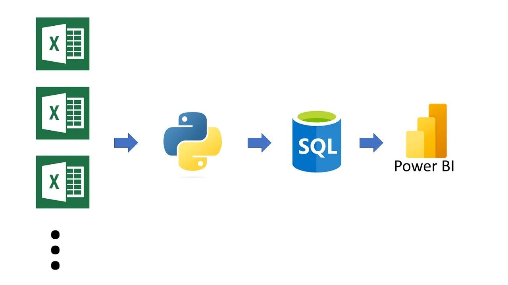

Data Analysis and Visualization of Prefabricated Classrooms Project
This project invoalved the creation of a comprehensive database model in MySQL, automated ETL processes using Python, and dynamic data visualization with Power BI.
Key Highlights:
- Designed and built the database model applying normalization principles in MySQL.
- Automated the extraction, transformation, and cleansing (ETL) process of raw project data using Python, and load the final tables into the database (MySQL).
- Conducted exploratory data analysis (EDA) to uncover insights and patterns in the data.
- Developed dynamic data visualizations with Power BI, facilitating data-based decision-making through interactive dashboards.